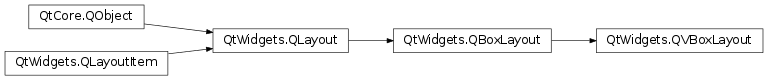
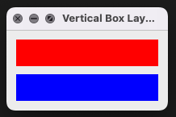
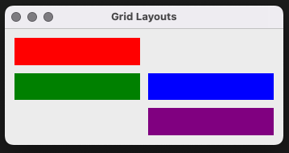
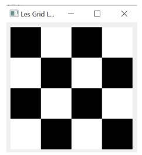

PyQt GUI
Introduction
- Windows,
- Labels,
- Interactions,
- Colors,
- Layout
import sys
from PyQt5.QtWidgets import QApplication, QWidget
from PyQt5.QtCore import QCoreApplication
app = QCoreApplication.instance()
if app is None:
app = QApplication(sys.argv)
window = QWidget()
window.show()
app.exec()

import sys
from PyQt5.QtWidgets import QApplication, QLabel, QMainWindow
from PyQt5.QtCore import Qt, QCoreApplication
class MainWindow(QMainWindow):
def __init__(self):
super().__init__()
self.setWindowTitle("My super window")
self.label = QLabel("Here is a PyQt5 window!")
self.label.setAlignment(Qt.AlignCenter)
self.setCentralWidget(self.label)
app = QCoreApplication.instance() # https://qt.developpez.com/doc/4.7/qcoreapplication/#instance
if app is None:
app = QApplication(sys.argv)
window = MainWindow()
window.show()
app.exec()
import sys
from PyQt5.QtWidgets import QApplication, QLabel, QMainWindow
from PyQt5.QtCore import Qt, QCoreApplication
from PyQt5.QtGui import QPixmap
class Window(QMainWindow):
def __init__(self):
super().__init__()
self.setWindowTitle("Paint")
self.label = QLabel('Hello')
self.label.setPixmap(QPixmap('/tmp/python.png'))
self.label.setScaledContents(True)
self.setCentralWidget(self.label)
app = QCoreApplication.instance()
if app is None:
app = QApplication(sys.argv)
window = Window()
window.show()
app.exec()
A PyQt GUI application implements an event-driven architecture. Functions or methods are executed in response to user's actions like clicking on a button.
Each PyQt widget, which is derived from QObject class, is designed to emit "signal" in response to one or more events. The signal on its own does not perform any action. Instead, it is "connected" to a "slot". The slot can be any callable Python function.
This is the code to call a slot_function, when a signal is emitted by a widget.
widget.signal.connect(slot_function)

import sys
from PyQt5.QtWidgets import QApplication, QMainWindow, QPushButton
from PyQt5.QtCore import Qt, QCoreApplication
class Window(QMainWindow):
def __init__(self):
super().__init__()
self.setWindowTitle("Button title")
self.button = QPushButton('Click me!')
self.button.clicked.connect(self.onClick)
self.setCentralWidget(self.button)
def onClick(self):
print("clic!")
app = QCoreApplication.instance()
if app is None:
app = QApplication(sys.argv)
window = Window()
window.show()
app.exec()
The QVBoxLayout class is used to construct vertical box layout objects.
 
import sys
from PyQt5.QtWidgets import QApplication, QMainWindow, QWidget, QVBoxLayout
from PyQt5.QtGui import QColor, QPalette
from PyQt5.QtCore import QCoreApplication
class Color(QWidget):
def __init__(self, color):
super().__init__()
self.setAutoFillBackground(True)
self.myPalette = self.palette()
self.myPalette.setColor(QPalette.Window, QColor(color))
self.setPalette(self.myPalette)
class Window(QMainWindow):
def __init__(self):
super().__init__()
self.setWindowTitle("Vertical Box Layouts")
self.layout = QVBoxLayout()
self.layout.addWidget(Color('red'))
self.layout.addWidget(Color('blue'))
self.widget = QWidget()
self.widget.setLayout(self.layout)
self.setCentralWidget(self.widget)
app = QCoreApplication.instance()
if app is None:
app = QApplication(sys.argv)
window = Window()
window.show()
app.exec()
The QGridLayout arranges your elements in a grid. Each widget has its coordinates expressed in row, column.
You do not need to fill in all the columns of the grid.

import sys
from PyQt5.QtWidgets import QApplication, QMainWindow, QWidget, QGridLayout
from PyQt5.QtGui import QColor, QPalette
from PyQt5.QtCore import QCoreApplication
class Color(QWidget):
def __init__(self, color):
super().__init__()
self.setAutoFillBackground(True)
self.myPalette = self.palette()
self.myPalette.setColor(QPalette.Window, QColor(color))
self.setPalette(self.myPalette)
class Window(QMainWindow):
def __init__(self):
super().__init__()
self.setWindowTitle("Grid Layouts")
self.layout = QGridLayout()
self.layout.addWidget(Color('red'),0,0)
self.layout.addWidget(Color('green'),1,0)
self.layout.addWidget(Color('blue'),1,1)
self.layout.addWidget(Color('purple'),2,1)
self.widget = QWidget()
self.widget.setLayout(self.layout)
self.setCentralWidget(self.widget)
app = QCoreApplication.instance()
if app is None:
app = QApplication(sys.argv)
window = Window()
window.show()
app.exec()
Using the Color class and a QHBoxLayout, represent the flag of France . Using the Color class and a QVBoxLayout represent the flag of Germany.
Using a QGridLayout and the Color class represent a 4x4 checkerboard in the main window as shown in this figure.

import sys
from PyQt5.QtWidgets import QApplication, QMainWindow, QWidget, QGridLayout, QLabel
from PyQt5.QtCore import QCoreApplication
class Window(QMainWindow):
def __init__(self):
super().__init__()
self.draw_grid()
def get_label(self, pair):
lbl = QLabel()
sum = pair[0] + pair[1]
style_grey = "background-color: rgb(200,200,200);"
style_black = "background-color: rgb(10,10,10);"
lbl.setStyleSheet(style_grey if sum % 2 == 0 else style_black)
return lbl
def draw_grid(self):
layout = QGridLayout()
for (x, y) in [(i, j) for i in range(4) for j in range(4)]:
label = self.get_label((x, y))
layout.addWidget(label, x, y)
widget = QWidget()
widget.setLayout(layout)
self.setCentralWidget(widget)
app = QCoreApplication.instance()
if app is None:
app = QApplication(sys.argv)
window = Window()
window.show()
app.exec()